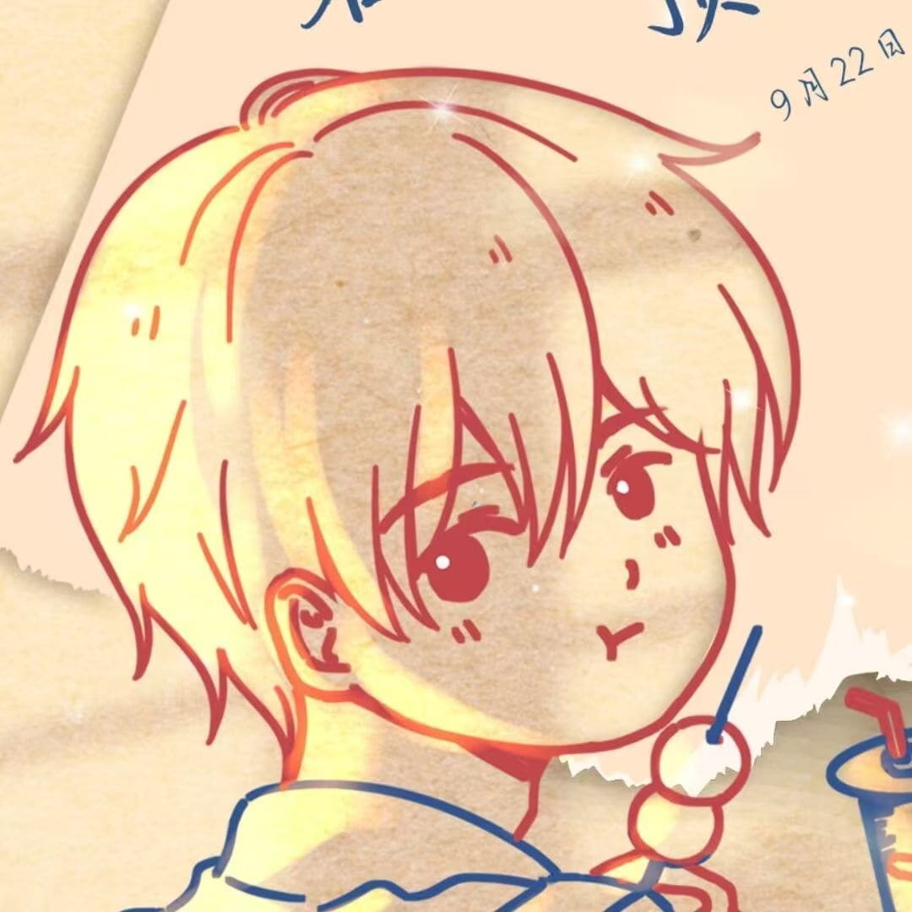

开放合作 · 终身学习
王隆粮
文博 × AI 交叉领域探索者
虚怀若谷，格物致知。坚信知识具有复利效应，致力于将人工智能与文物博物馆学深度融合， 探索数字化保护与智能化的新路径。
亮点战绩
可量化的成长与认证
个人作品
独立完成的交互式 Web 作品 · 已上线
经历
学习 · 实践 · 探索
项目
个人实践与探索
技能矩阵
语言 · 工具 · 领域
教育与证书
学术背景与专业认证
个人生活
工作之外的温度与好奇心
个人爱好
工作之外坚持的小事